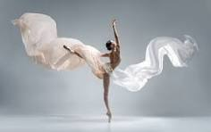
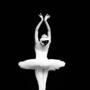

O ballet é uma forma de dança que combina movimentos precisos, música e expressão artística. Ele exige disciplina, equilíbrio, concentração e dedicação dos bailarinos.
Durante as apresentações, os bailarinos utilizam técnicas específicas para transmitir sentimentos e contar histórias através dos movimentos do corpo.
Além da parte artística, o ballet também contribui para o desenvolvimento da coordenação motora, postura e flexibilidade.

O ballet surgiu durante o período da Renascença e, ao longo do tempo, passou por diversas transformações até se tornar uma das formas de dança mais conhecidas no mundo.
Com o desenvolvimento da técnica, foram criadas regras e métodos de ensino para organizar os movimentos e melhorar a formação dos bailarinos.
A dança passou a ser apresentada em grandes espetáculos, utilizando música, figurinos e cenários para criar histórias e transmitir emoções ao público.
Atualmente, o ballet continua evoluindo e influencia diferentes estilos de dança, sendo praticado por pessoas de várias idades em diversos países.
Com o tempo, o ballet ganhou novas técnicas e ficou conhecido mundialmente, sendo uma arte presente em diversos espetáculos.
A dança exige equilíbrio, dedicação e esforço dos bailarinos para realizar movimentos com precisão e harmonia.